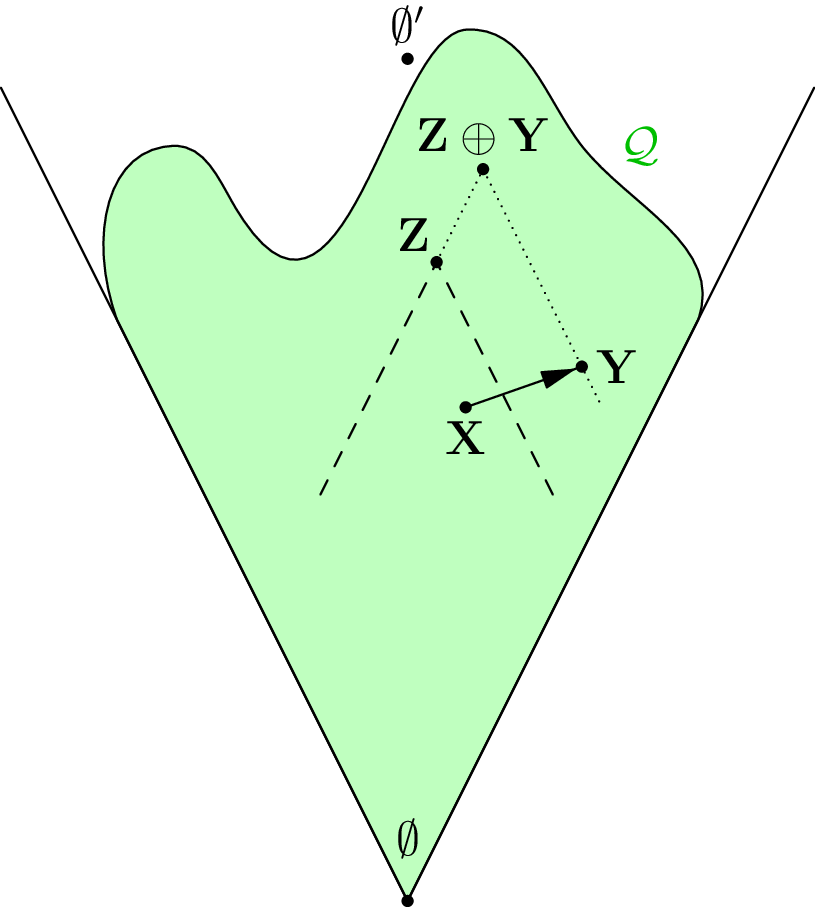

|
Reverse Mathematics of Ramsey's Theorem and König's Lemma.
Reverse mathematics is a field which compares mathematical statements by their strength. Roughly speaking, statement \(A\) is stronger than statement \(B\) when one can prove \(A\) implies \(B\) using only "computable mathematics," formally embodied by \(\mathsf{RCA}_0\). In this framework, we can show, for example, that the compactness of \([0,1]\) is strictly weaker than the sequential compactness of \([0,1]\). This paper covers the basic concepts of computability theory, reverse mathematics, and forcing, with a close examination of the strengths of Ramsey's Theorem and König's Lemma. I wrote this at the 2025 UChicago math REU. |
 |